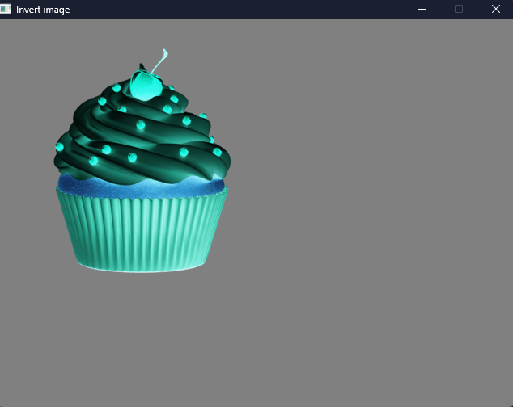
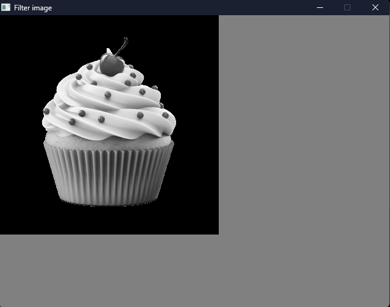
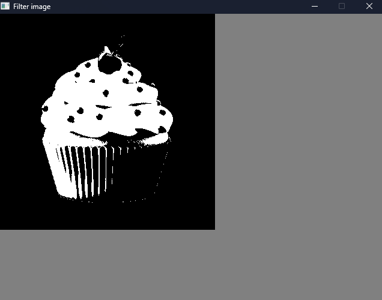
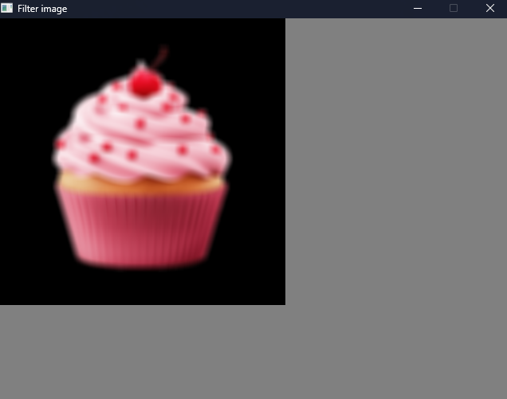
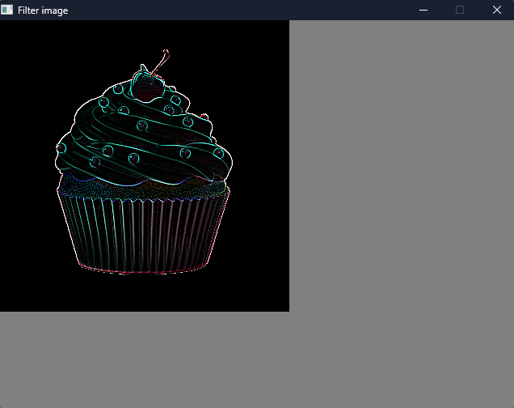

Filtros de Imagem
15 de setembro de 2026
Na aula dessa semana, descobrimos o que é um filtro de imagem e como conseguimos modificar uma imagem usando apenas cálculos!
Mas o que é um filtro? Na verdade, um filtro de imagem é nada mais do que uma operação matemática aplicada aos pixels para modificar seu visual (cor, brilho, nitidez, nível de detalhes...).
Existem filtros que trabalham analisando cada pixel individual e outros que analisam também seus vizinhos. Os filtros espaciais, utilizados aqui, fazem suas operações diretamente nos pixels da imagem.

Inverter imagem:
Esse é um dos filtros mais simples, pois não depende dos pixels vizinhos. A alteração é feita individualmente em cada pixel, substituindo cada canal de cor pelo seu valor complementar, ou seja, o inverso.
Como cada canal RGB possui valores entre 0 e 255, a inversão é feita utilizando:
R' = 255 - R
G' = 255 - G
B' = 255 - B
Dessa forma, uma cor clara se torna escura e vice-versa, e as cores são transformadas em sua complementar. O resultado parece um pouco um negativo de fotografia.

Tons de cinza:
A transformação para tons de cinza também funciona pixel a pixel. Como uma imagem colorida possui três componentes (vermelho, verde e azul), precisamos transformar esses três valores em apenas um valor de intensidade.
Essa intensidade é calculada utilizando uma média ponderada dos canais RGB, que é a seguinte:
Cinza = 0.299R + 0.587G + 0.114B
Os pesos são diferentes porque o olho humano possui maior sensibilidade ao verde e menor sensibilidade ao azul. Depois de calcular, o mesmo valor é usado nos três canais, formando uma imagem em escala de cinzas.

Threshold / Preto e Branco:
Esse sim é verdadeiramente preto e branco! O threshold também utiliza a intensidade do pixel, mas ao invés de manter vários níveis de cinza, ele transforma a imagem em apenas dois valores: preto ou branco.
Primeiro, calculamos a intensidade do pixel. Depois comparamos esse valor com um limite (daí vem o nome threshold). Se o valor for maior que o limite, o pixel recebe branco; senão, recebe preto.
Exemplo, usando 128 (um cinza médio) como limite:
Intensidade > 128 → branco (255)
Intensidade ≤ 128 → preto (0)

Eliminar ruído / desfocar imagem:
Esse filtro é conhecido como filtro passa-baixa. Ele analisa uma região ao redor de cada pixel e substitui seu valor pela média dos pixels vizinhos.
Ele tem o nome passa-baixa porque o filtro remove principalmente altas frequências da imagem, que correspondem a mudanças rápidas de intensidade, como bordas e pequenos detalhes. Quanto maior a região analisada, maior será o efeito de desfoque.

Realçar detalhes / Passa-alta:
O filtro passa-alta realiza o processo contrário ao passa-baixa. Enquanto o blur suaviza as diferenças entre pixels próximos, o passa-alta destaca essas diferenças. Para isso, utilizamos uma máscara que dá maior peso ao pixel central e pesos negativos aos pixels vizinhos:
-1 -1 -1
-1 8 -1
-1 -1 -1
Regiões uniformes possuem pouca variação e acabam sendo removidas, enquanto mudanças bruscas de intensidade são destacadas. Por isso, o resultado é uma imagem com bordas e detalhes realçados.

Criar esse post me ajudou a entender melhor como a computação visual consegue transformar números e cálculos em algo que conseguimos enxergar. No final, uma imagem é um conjunto de dados que pode ser manipulado de várias formas diferentes.
← Voltar para o início